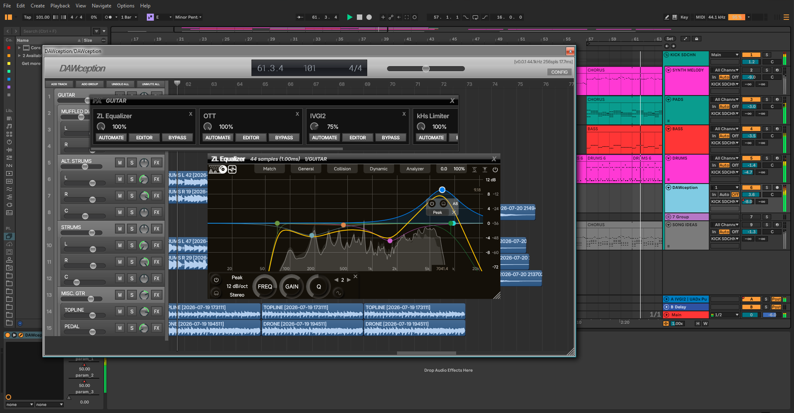
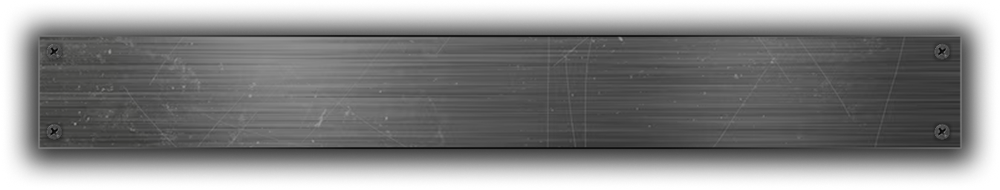

DAWception
Features
Install
Usage
This is
DAWception
.
Get past that 8 track limit in your DAW.

DAWception is a free and open‑source plugin made to
work around track count limits in DAWs
like Ableton Live Lite.
To start using DAWception,
add the plugin to any track in your DAW
—you'll then have a mini DAW in a plugin.
You can
create tracks to play audio clips
, and even
host other plugins
with automation support.

Features
Independently processed
unlimited stereo audio tracks
which can be organized using groups
VST3 plugin hosting
for individual tracks and/or groups, with
latency compensation
Dry/wet control added to every hosted plugin
(even if the hosted plugin doesn't provide it by default)
Drag and drop audio clips
with basic clip manipulation features (like splitting, trimming)
Automation passthrough
from host DAW to plugins hosted inside DAWception, with
128 automation inputs
you can view a quick usage guide along with example screenshots
here
Install
all installations are VST3
DAWception isn't released yet,
so the install buttons don't function!
Linux
x86_64
mainstream distros
Install
Windows
64-bit
Windows 10 or later
Install
macOS
Universal
macOS 10.11 or later
Install
To complete installation:
x86_64-linux
unzip the downloaded file
move DAWception.vst3 to your DAW's VST3 plugin folder
On Linux, your DAW's VST3 plugin folder is usually located at:
~/.vst3/
(user)
OR
/usr/lib/vst3/
(global)